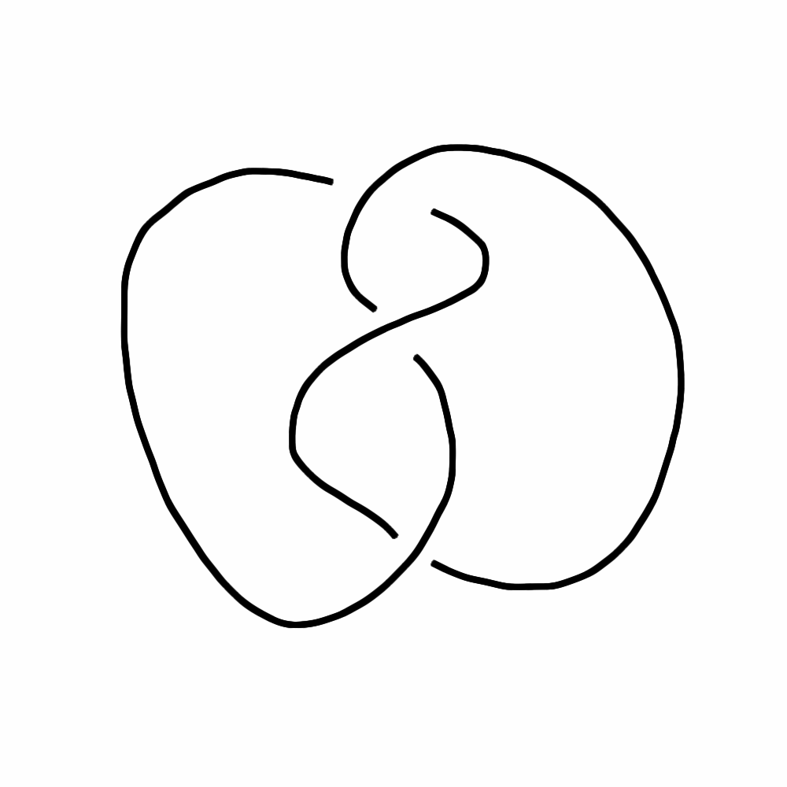
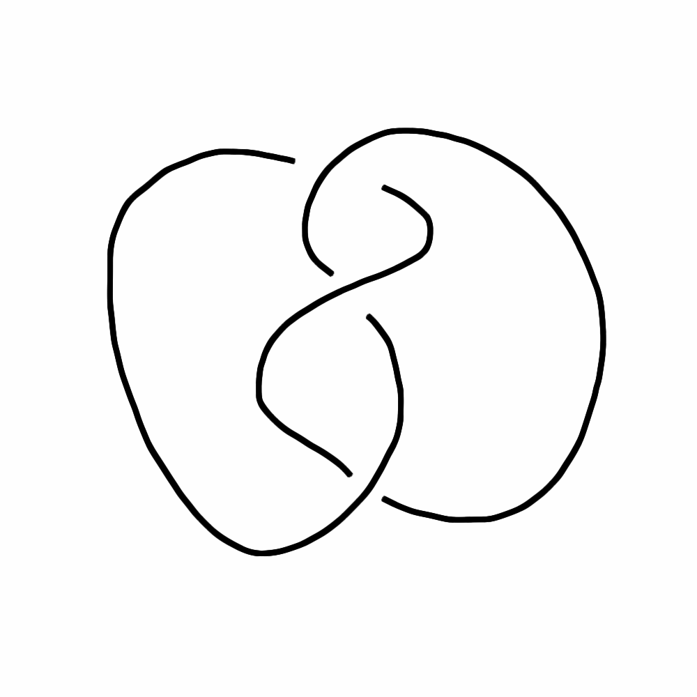

Butterfly Diagrams for Knots and Links
MAA Iowa 2016
Theron J Hitchman
University of Northern Iowa
What is a Knot? What is a Link?
(image credit: http://www.indiana.edu/~knotinfo/)
When are knots equivalent?
(Henrich-Kauffman example, Monthly, May 2014)
 

The Simplest Knot: Trefoil
A Simple Link: The Borromean Rings
What is a butterfly graph?
- Introduced by Hilden, Montesinos, Tejada and Toro.
- Generalizes Thurston's construction of the Borromean rings link.
Butterfly graph
- A "sphere graph": graph on 2-sphere with no edge crossings
- bipartite: vertex classes are A/E or B
- every A/E vertex is bivalent
- 1-skeleton of a cellular decomposition of the 2-sphere
- each 2-cell is decorated with a trunk, and "wings"
A butterfly for Borromean rings
A butterfly for Borromean rings
A butterfly for Borromean rings

A butterfly for Borromean rings

The Bridge Index
"The smallest number of local maxima, when considering all possible realizations of the knot (or link) in space."
Bridge Position for a Trefoil
Another Example: 8_10

Bridge Position for 8_10
Theorem: (Hilden-Montensinos-Tejada-Toro) The bridge index of a link is equal to the
smallest k for which the link has a k-butterfly diagram.
Theorem: (Horst Schubert) If K = L # M is a
composite knot, and b(K) denotes the bridge number, then b(K)-1
is an additive quantity.
Question:
Can we prove
b(K) - 1is additive using butterflies?